MapReduce Algorithm Design
Common Theme
Parallelization challenges come from (sharing state):
- Need to communicate partial results
- Need to access shared resources
- Layer of abstraction: The datacenter is the computer
- Allow the developer to avoid system level details.
- dev specifies the computation that needs to be performed
- framework handles the actual execution
- Scale out, not up
- assume that components will break
- move processing to the data, code is much smaller
- process data in sequential order, avoid random access (which is expensive)
MapReduce Runtime
- handle scheduling: assign workers to map and reduce tasks
- move processes to data
- Start up worker on nodes that hold the data.
- handles synchronization
- handling errors and faults
- gotchas
- avoid object creation (expensive)
- get data to maps and reducers
- via job config params
- Side data: distributed cache, read from HDFS in setup.
Business Intelligence
Organizations should retain data resulting from carrying out it's mission. Exploit those insights to benefit the organization.
Virtuous product cycle: Generate revenue
- a useful service
- analyze user behaviour to extract insights (data science)
- transform insights into actions (data products)
- feedback
Cloud Computing
- Utility computing: computing resources as a metered service, pay as you go
- cloud makes it easier to start companies that generate big data, avoid ownership of the data
- everything as a service
Namenode Responsibilities
- managing the file system namespace
- coordinating file operations
- maintaining overall health
files are divided into many splits, RecordReaders act as a cursor, passed to the Mappers.
- the splits can be arbitrary, down the middle of a record
- RecordReaders always start reading from a complete block, may keep reading over the edge of a split to capture the last record.
Distributed GroupBy in MapReduce
Map side
- map outputs are in memory in a circular buffer
- when buffer reaches threshold, contents spilled to disk
- spills are merged into a single partitioned file (sorted by partition)
- combiners run during merges
Reduce Side
- map outputs are copied over to reducers
- sort is a multi-pass merge of map outputs (in memory, on disk)
- combiner runs during the merges
- final merge pass goes directly into reducer
Design Patterns
- all algs must be expressed in m, r, c, p
- no idea when things run, what order, which input a worker is processing
- avoid: object creation, buffering
- local aggregation: synchronization kills communication, kills performance, reduce the number of intermediate pairs that need to be processed.
- in-mapper combining: fold combiner into the mapper, preserve state across multiple map calls.
- pros: speed
- cons: need to explicitly manage memory, order-dependent bugs
- in-mapper combining: fold combiner into the mapper, preserve state across multiple map calls.
- combiners are optional optimizations, may br run 0, 1, or multiple times
- should not impact correctness
Pairs vs. Stripes
- Pairs: Utilize the key as a pair, secondary sorting
- pros: easy to implement + understand
- cons: lots of intermediate pairs, combiners dont really work
- may need custom sort order, have certain pairs show-up first
(a, *)- pull values as part of the key for proper sorting
- Stripes: Group pairs into associative array
- pros: less sorting and shuffling, can use combiners (element-wise operations)
- cons: harder to implement, more complicated object, data structure manipulations,
tradeoffs:
- developer code vs. framework (sorting, grouping)
- number of kv pairs
- size + complexity of each kv pair: de/serialization overhead
| Pairs | Stripes |
|---|---|
| more kv pairs | less |
| less combining | more combining |
| more sorting | less sorting + shuffling |
| simple reduce aggs | complex (slower) aggs |
Pig
- write in a higher level language, run a series of MapReduce jobs.
Common model:
LOAD # load from HDFS
FOREACH ... GENERATE # per tuple processing
FILTER # discard unwanted tuples: (map)
GROUP / COGROUP # group tuples
join # relational join (reduce)
STORE # write back to HDFS
- extend PIG via user defined functions (UDFs) in any language
Problems with MapReduce
- always have to go back to HDFS
- slow
- Dryad: Graph processing framework
- abstractions for vertex-to-vertex communication
Spark
-
based on Resilient Distributed Datasets (RDD)
- immutable, partitioned
- perform transformations, lazy
- actions, trigger the execution
-
RDDs don't have to be written back to HDFS, can chain operations
-
fault tolerance: RDDs can be regenerated from the operations
-
why does it work
- associativity: group operations in any way:
1 + 3 + 2 = (1 + 3) + 2 - commutativity: swap order of operands however you want:
(2 + 1) + 3 = 3 + (2 + 1)
- associativity: group operations in any way:
Monoids
- semigroup: (M, operator)
- 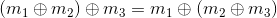
- monoid: Semigroup + identity operation
- commutative Monoid: monoid + commutativity
- when you can't utilize monoids: sequence computations by sorting


Analyzing Text
- Language Models:
 _
_ - Use Markov Assumption to limit history to a fixed number of words:

- 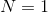 unigram language model,
 : bigrams
: bigrams - Compute Maximum likelihood estimates (MLE) (count + divide)
- 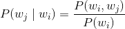
- Smoothing: Want to avoid zero probabilities
- Laplace: add 1 to all counts
- Jelinek-Mercer smoothing: weighted linear combination of lower-order models.
- Kneser-Ney: discounted model with special continuouation n-gram model. Number of different contexts
 has appeared in.
has appeared in. - Stupid backoff: use the higher order language model if greater than zero, otherwise fallback to lower order models.
- Solve the problem by throwing lots of data at it.
- Bayes rule:

Document Retreival
- ranked retrieval: Order documents by how likely they are to be relevant.
- Partitioning: Scalability
- Replication: Redundancy
- Caching: Speed
- Routing: Load Balancing
TF.IDF Term Weighting
- term weights consist of 2 parts: document and collection
- high weights for terms that appear many times in a document, terms that appear in many documents should get low weights.
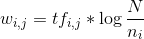
Graphs
- hard: irregular structure, irregular access patterns
- typical alg: local computations at each node, propogate results along the edges
Representations:
- Adjacency Matrix: nxn square matrix, n=number of verticies, 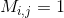_ iff there is an edge from i to j.
- intuitive to iterate over rows and columns
- lots of wasted space, for sparse graphs. easy to write, hard to run computations
- Adjacency List:
- Less wasted space, possible to compress. Easy to compute using outlinks (just iterate over the list foreach edge)
- hard to compute over inlinks
- Edge List: Explicitly enumerate all of the edge pairs
- easy to add new edges, just add a pair to the list
- waste alot of space.
Store undirected graphs, do one of:
- store both edges, make sure the algorithm de-dups
- store as one edge, alg needs to recognize it goes in both directions.
Manipulations
- Invert:
flatMapandregroup - Adjacency list -> edge list:
flatMapover adjacency list and emit tuples - Edge list -> adjacency list:
groupby
Single Source Shortest Path
- Recall: Dijkstra, start at source node, expand the field until the destination is reached.
- Define inductivly
DistanceTo(s) = 0b is reachable from a if b is on adjacency list of aDistanceTo(p) = 1For all nodes p reachable from sDistanceTo(n) = 1 + min(DistanceTo(m), for m in M): For all nodes n reachable from some other set of nodes M
Parallel BFS
- For all nodes except the start,

- Mapper: For each m in adjacency list, emit
(m, d+1), emit the distance to yourself - Sort/Shuffle: group distances by reachable nodes
- Reducer: Select the minimum distance path for each reachable node, additional book-keeping needed to keep track of the actual path.
- Multiple Iterations: each MapReduce job expands the frontier by one step
class Mapper {
def map(id: Long, n: Node) = {
emit(id, n)
val d = n.distance
emit(id, d)
for (m <- n.adjacenyList) {
emit(m, d+1)
}
}
}
class Reducer {
def reduce(id: Long, objects: Iterable[Object]) = {
var min = infinity
var n = null
for (d <- objects) {
if (isNode(d)) n = d
else if (d < min) min = d
}
n.distance = min
emit(id, n)
}
}
- run job, check for convergence, try again
- MapReduce explores all possible paths in parallel, lots of wasted space, we only do useful work at the frontier.
Single Source with weighted edges
- add weight w for each edge in adjacency list
- in mapper emit
(m, d+w)instead of(m, d+1) - need to go through the entire graph
Multiple Source shortest Path
- have an array of sources
- Mapper emits an array of distances wrt each source
- Reducer finds the minimum for each element in the array
Generic Recipie:
- represent graph as adjacency list
- perform local computations in the mapper
- pass along partial results via outlinks, use the desination node as the key
- perform aggregation in the reducer on inlinks to a node
- iterate until convergence, external driver
- pass the graph structure between iterations
PageRank
-
Based off of random walks around the web
-
Given page x with n inlinks
- 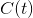 is out-degree of t
 is the prob of a random jump
is the prob of a random jump total number of nodes in the graph
total number of nodes in the graph- 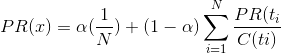
- Second pass for dangling nodes:

 is previous pagerank mass
is previous pagerank mass is the missing PageRank mass
is the missing PageRank mass
-
Convergence criteria
- iterate until PageRank values don't change
- Iterate until PageRank rankings don't change
- Fixed number of iterations
-
Use log probabilities to avoid small values
-
weighted PageRank
-
Personalized PageRank
-
Spark:
join,flatMap,reduceByKey- cache the adjacency list
- Join with PageRank vector
Analyzing Relational Data
Database Workloads
- OLTP: Online Transaction Processing
- user facing, real-time, low-latency
- Application users want fast applications
- Typical access patterns
- random access
- writes on small amounts of data
- small amounts of data per query
- OLAP: Online Analytical Processing
- Business intelligence, data mining
- batch workloads, less concurrency
- Analysts want to be able to analyze large amounts of data
- Full table scans
- lots of joins
- large amounts of data per query
- Hard for OLTP and OLAP to exist together
- poor memory management
- conflicting data accessing patterns
- variable latency
- solution Build a separate data warehouse
- OTLP -> ETL -> OLAP
- Run ETL on some frequency (ex. every night)
- Implication: Analysts are working on old data
- Extract
- Transform
- Data cleaning and integrity checking
- schema conversion
- field transformations
- Load
- OLAP cubes: Join tables together, perform operations
- slice and dice
- slice the cube into areas that your interested in
- ex. take a time slice, only care about the last month
- roll-up /down
- Dimensions have heirarchial structure: time is composed of hours / days / years
- Specific products categories / sub-categories
- drill down: Stores in Ontario -> Stores in Southern-Ontario -> Stores in Waterloo
- pivot
- Rotate the cube
- Sales figures for products and stores, rotate to see changes by month
- Perform aggregation along some different axis
- Cube materialization
- lots of joins, group-bys and aggregations
- pre-compute parts of the cube
- trade-off between time and space
- slice and dice
What do you do with the data?
- Report Generation
- Dashboards
- Ad-hoc analyses
- Descriptive: What happened / what is happening
- Predictive: predict future, unknown events
- Data products
Why databases (known unknowns)
- great for structured data, can use schemas!
- data is clean
- know what queries you want to run on it
Why Not databases (unknown unknowns)
- little to no structure in data
- data is messy and noisy
- don't know what your looking for
- behavioural data
Advantages of Hadoop (dataflow language)
- don't need to know a schema ahead of time
- raw scans are the most common operations
- many analyses are better formatted imperitevely
- much faster data injest rate
Utilize both to gain the most benefits and flexibility: Data Lake: Store of raw data Data Warehouse: Structured data
Future: HTAP: Hybrid Transactional Analytical Processing
- avoid the ETL process
- Let's analysts work with realtime data
MapReduce algorithms for relational data
- Projection (
 )
)
- Select particular fields for each tuple
- Need to keep track of field positions after projections
- Selection (
 )
)
- Process each tuple, emit those that meet some criteria
- Pipeline with projections
- Performance limited by HDFS throughput
- speed of encoding/decoding tuples is important
- take advantage of compression
- Groupby ... Aggregation
- Some aggregation function
- Map over dataset, emit tuples, key by the group by attribute. Framework handles the actual grouping
- Compute the aggregation function in the reducer
- Optimize with combiners, IMC
- Joins
- Reduce side (repartition, shuffle join)
- map over both datasets
- emit tuple value with join key as the intermediate key
- framework brings together
- perform join in reducer
- Map Side (sort-merge)
- both datasets must be copartitioned (partitioned in the same way), allows for parallelization
- Map over one dataset, read from the other corresponding partition
- no reducer needed
- Hash (broadcast, replicated)
- Load one dataset into memory, keyed by the join key
- Read the other dataset, probe for the join key
- Store R in DistributedCache, progate to all workers
- no reducers necessary
- Need
R << Sand R must fit into memory - variants
- R and S are co-partitioned: only need to build hash maps for the corresponding partition
- striped: If R doesn't fit into memory
- Divide R into n groups, such that each fit into memory
- Perform a hash join for all n
- Union the results together
- Use a global key-value store (Memcached), prob the key-value store
- Preferences (Most, ... ,Least): Hash > Map > Reduce
- Reduce side (repartition, shuffle join)
Limitations of Joining
| Hash | Map | Reduce |
|---|---|---|
| Memory | Sort order and partitioning | General purpose |
Running SQL-on-Hadoop
- Build logical plan
- optimize logical plan
- select physical plan
Hadoop Dataware house designs
- Joins are expensive
- Ultimately a time-space trade-off
- Have more redundant data around in order to save on later joins (save time, waste space)
- normalization: factor out redundancy
- denormalizations: pre-join to the Facts table in order to save the cost of later joins
- Denormalize can occur during the ETL process
Row vs. column Stores
- Row store:
(a, b, c), (a, b, c), ....- Easy to modify a record, in place updates
- May need to read un-necessary data during processing
- Column store:
(a, a, a, a..., ), (b, b, b, ...), (c, c, c, ...)- only read the necessary data when processing
- tuple writes require multiple operations
- tuple updates are complex
- better compression, read efficiency, vectorized execution, compiled queries
Physical Representation
- Use binary representations (parqueet, protobuf)
- define schemas for binary
- Use an index to speed up hadoop, InputSplits on contain blocks that match selection crtieria. Instead of processing everything and thowing away most. Implement at the RecordReader level.
Predictive Analytics
- Descriptive Analytics: Describe what is currently happening
- Predictive Analytics: Predict future values
- Classification: output draw from labels
- Data -> Features -> Model -> Optimization
Features
- Dense: most samples contain the features
- Sparse: messages that contain specific terms
- Gathering labelled data can be a bottleneck
- crowdsource
- Bootstrapping, semi-supervised techniques
- Exploiting user behaviour logs: emojis for sentiments
- Supervised Binary Classification: restrict output label to binary
- Extend to multi-class with multiple classifiers
- 1 vs. rest: A or not, B or not, ...
- Classifier Cascading: A or Not -> B or Not -> ...
- Keep going until success
- Extend to multi-class with multiple classifiers
- Minimize some loss function, gradient descent, lower loss over time
- Gradient descent is first order techniques, use higher order derivatives
- Logistic Regression:
- Set equal to one: 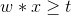
- 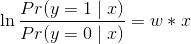


- Minimize the log likelihood
- 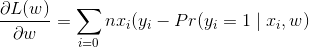
- Utilize the gradient to update weights
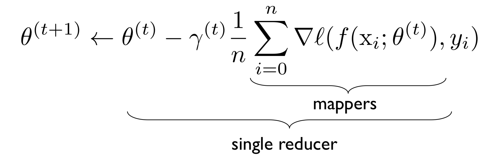
val points = spark.textFile(...).map(parsePoint).persist()
var w = // random initial vector
for (i <- 1 to ITERATIONS) {
val gradient = points.map{ p =>
p.x * (1/(1+exp(-p.y*(w dot p.x)))-1)*p.y
}.reduce((a,b) => a+b)
w -= gradient
}
Batch Learning: Update the model after considering all training instances Online Learning: Update the model after considering each randomly selected training example.
- stocastic gradient descent
- Randomly shuffle the training samples
- Mini-batching as a middle ground
Ensemble Learning: Use multiple independent models to make a prediction
- Train classifiers on distinct partitions of the data
- Combining Predictions
- Majority Voting: Take the class that most models pick
- Simple Weighted Voting: Apply some weights to each prediction
- Model Averaging
- This works as long as the models are independent. If the errors are uncorrelated then the chances of multiple classifiers being wrong is less likely.
Metrics
| Actual | Predicted | Error |
|---|---|---|
| Positive | Positive | True Positive |
| Negative | Positive | False Positive (Type 1 Error) |
| Positive | Negative | False Negative (Type 2 Error) |
| Negative | Negative | True Negative |
- Cross-Validation: Train / Test Split, validation set to test the model during training.
Similarity:
- Offline variant: extract all similar pairs of objects from a large collection
- Online variant: is this object similar to something I’ve seen before?
- Steps: Specify distance metric -> compute representation -> Project -> extract
Minhash
- near duplicate detection of webpages, HTML represented as shingles (n-grams)
- For all elements, binary vector if in each document, M00 = both 0, M11 = both 1, M01, M10. Jaccard: 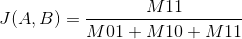
- Randomly permute the rows of the matrix, minhash is then the first row with a 1. Then 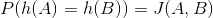
- Task: Discover all pairs with similarity greater than s, FP: discovered pairs that have a similarity less than s, FN: pairs with similarity greater than s not discovered.
- Alg: Foreach object, compute minhash value, group objects by their hash value, output all pairs within each group. Threshold controls the amount of FPs and FNs.
- Use k hash functions, probability of detection is 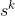.
- n sets k: for each object, compute n sets k minhash, for each set concat k minhash values together, in each set group objects by signature (k minhash values), output all pairs in each group, de-dup pairs. If J(A, B) = s; P(none of the values collide) = 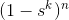, P(Detection) = 1 - P(none collide).
Batch formulation: Discover all pairs with similarity greater than s. Online formulation: Given a new page, is it similar to one that we've seen before. Minhash problems: good for near-duplicate detection, jaccard only, no way to assign weights to features,
Arrange Similar Items into Clusters
- Offline variant: entire static collection available at once
- Online variant: objects incrementally available
- forming clusters: high similarity between items in the same cluster, low similarity between items in different clusters.
- HOW: Distance metric (jaccard, euclid) -> compute representation (shingling, tf.idf) -> apply clustering alg
- Distance = 1 - similarity
- Hierarchical Agglomerative Clustering: start with each item in it's own cluster, until there is only 1 cluster, find the two most similar clusters, merge. The history of merges form the heirarchy.
- What is the similarity between two clusters:
- single link: similarity of 2 most similar members
- Can result in long and thin clusters
- complete link: similarity of 2 least similar members
- can result in round clusters
- Group average: average similarity between members
- single link: similarity of 2 most similar members
- K-MEANS: Select k random instances as centroids
- iterate: assign each instance to it's closest centroid, update centroid based on assigned instance.
Mutable State
We want to keep track of mutable state in a scalable mannar. state organized in terms of logical records, state is unlikely to fit on a single machine, distributed.
Why not use RDBMS:
- Everything must be designed up front, annoying to change
- ACID properties can be expensive:
- Atomic: Transactions are all or nothing
- consistent: A transaction will bring the database from one valid state to another.
- isolated: Ensures that transactions executed concurrently would yield the same results had they been executed sequentially.
- Durability: Once a transaction has been committed, it will remain so.
- potentially High cost
Can gain extra features by trading away other properties (NoSQL)
- Types: Key-value store, column ordiented database, document stores, graph database.
- Ideas:
- Partitioning (Sharding): Need to keep track of the partitions
- increase scalability, decrease latency
- Replication: Need to remain consistent
- To incrase robustness (availability), increase throughput
- Caching: Consistency
- reduce latency
- Partitioning (Sharding): Need to keep track of the partitions
- Key-value stores: store associations between keys and values. primitive keys, values are blobs. Ops:
get: value for key,put: set value for key. Consistency Model: Atomic puts, no cross-key operations- Non-persistent: just a big in-memory hash table (Redis, Memcached)
- Persistent: wrapper around a traditional RDBMS
- Doesn't fit on a single machine: Partition. Hash the keys and hash the machines. Machines hold pointers the next and prev, finger tables (+2, +4, ..). Route requests in

BigTable (HBase)
- Table is sparse, distributed, persistent, multi-dimensinoal sorted map. Indexed by
(row:string, column:string, time:int64) -> uniterpreted byte array - Lookup, inserts, deletes: single row transactions only
- rows: sorted lexicographically, efficient row scans. columns grouped into families
family:qualifier, provide locality hints, unbounded number of columns. All just key value pairs.
| In Memory | On Disk | |
|---|---|---|
| Mutability | Easy | Hard |
| Size | Small | Big |
Log-structured Merge Trees
- In memory store, when full: flush to disk
- On disk Stores are immutable, indexed, persistent k-v pairs.
- Write Ahead Log for persistance
Distributed Version: Use HDFS
- Replication for free
- Persistent, ordered immutable map from keys to values
- operations: Look-up value for key, iterate over key/value pairs in range.
Trade-offs Partitioning: Need distributed transactions
- Use a two-phase commit (coordinator, subordinates), use WAL at each node, cons: blocking and slow, problems if coordinator dies. Replication: Need replica coherence protocol Caching: Need caching coherence protocol
CAP Theorem
- Consistency, Availability, Partition Tolerence.
- Pick 2.
- CA: Constistency + Availability. Parallel databases that use 2PC.
- Availiability + Partition Tolerence, Web CAching, DNS
PACELC
- PAC: If there's a partition, choose A or C.
- ELC: Otherwise, do we choose LAtency or Consistency
- The choice the application dependent.
Graphs Redux
- Can be smarter about partitioning graphs, use underlying graph structure
- webpages on the same domain are likely to be connected, domain reversed urls
cnn.com -> com.cnn. In social networks, domain characteristics
- webpages on the same domain are likely to be connected, domain reversed urls
Real-Time Analytics
Recall: Data scientists typically are working with old data.
- implication: Results an be hours behind reality, when things move fast this can be bad (delayed query recommendations)
- Real-time: low-latency
- Online: Contrasted with batch processing
- Stream: Nature of the data that arrives
- Data stream: an ordered, continuously arriving sequence of tuples. May not be possible to store everything, may not be possible to examine everything.
Windowing:
- restrict the processing scope
- based on ordering (time), item counts, explicit markers (punctuations)
- Sliding window: increment by amount. Tumbling Window: Each window is descrete (no overlap)
- Punctuations: Application inserted end of processing, Pro: Application controlled window semantics, cons: unpredictable window size (too big / small).
Stream Processing Challenges
- Inherent Challenges: LAtency requirements, space bounds
- System Challenges:
- Bursty behaviour and load balancing:
- Out of order message delivery, non-determinism
- Consistency semantics (at most once, exactly once, at least once)
Producer / Consumer
- Producers push data to consumers (via callbacks)
- Consumer pulls data from producer (via polling)
- Insert a broker (Kafka) in the middle, Producers send to broker, Consumers get data from broker
Storm / Heron
- A job topology is a computational graph, directed edges indicate communication between edges
- Processing semantics: At most once (without acknowledgments), at least once (with acks)
- Spouts: emit tuples. Bolts: Processing tuples.
Spark Streaming: Descretized RDDs
- Problem: no differentiation between the event-time and processing time, when the event actually occurred and when the tuple is processed
Watermark: System's notion when all data in a window is expected to arrive. Default trigger fires at the watermark.
Dealing with Streaming Problems
- Throw away data: Sampling
- Reservoir Sampling: Select s elements from a stream of size n with uniform probability. Store the first s elements, for every k-th element: keep with probability
 , randomly discard an existing sample.
, randomly discard an existing sample.
- Reservoir Sampling: Select s elements from a stream of size n with uniform probability. Store the first s elements, for every k-th element: keep with probability
- Approximations (hashing)
- Set Cardinality: HashSet, HyperLogLog Counter
- hash each item and examine the hash code, keep track of some unique pattern (number of leading zeros). Use multiple hash functions and do it lots of times.
- Set Membership: HashSet, Bloom Filter
put(x): insert x into set,contains(x): yes if x is a member of a set.- m-bit vector, k hash functions. put(x): run x through each hash function, set the corresponding bit to 1.
- contains: run the item through the hash functions, check if all of the bits are 1. False positives possible, no false negatives.
- Frequency Estimation: HashMap, Count Min Sketches
put(x): increment the count of x by 1.get(x)return the frequency of x.m x karray of counters, k hash functions. put run item though each hash function, increment the corresponding count. get: run item through each hash function, return the minimum count.
- Set Cardinality: HashSet, HyperLogLog Counter